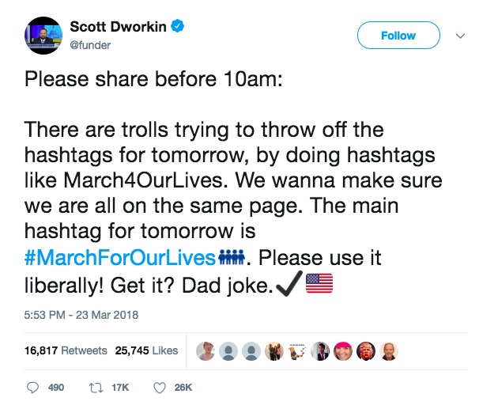
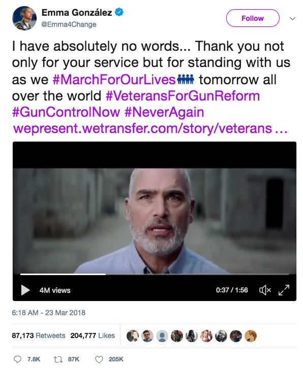
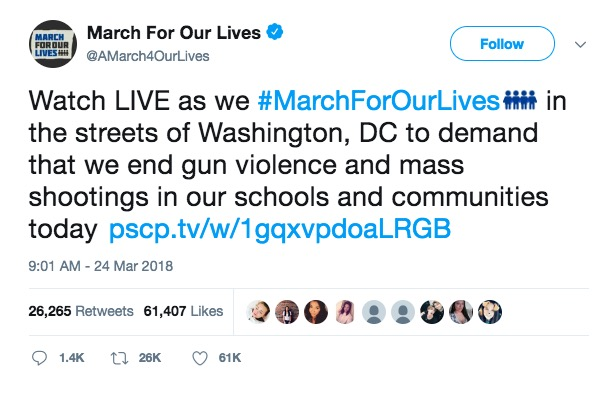
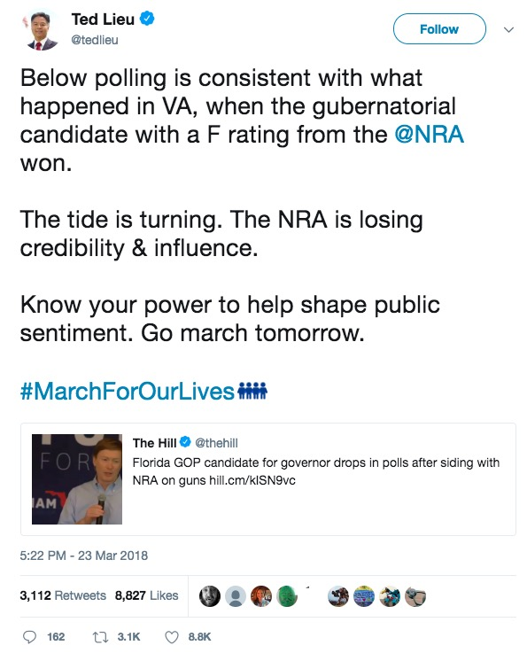
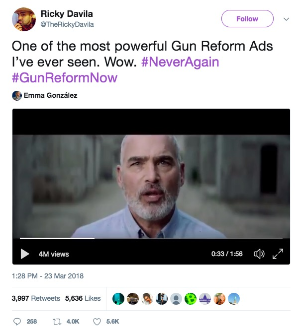
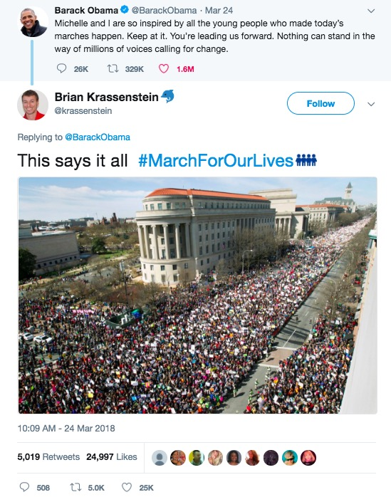
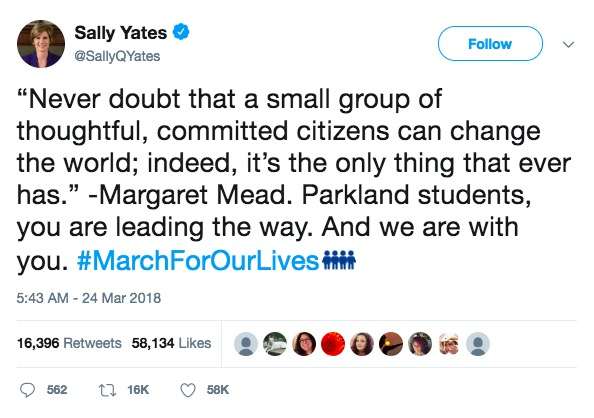

1) Night before.
Data from 12 AM to 3 AM UTC (8 PM to 11 PM EST)
📊 Tweet Breakdown
(Figure 1.)

📈 Mentions vs. Time
(Figure 2.)

🗣️ Most Mentioned Users
*mention = @mention OR Retweet
(Figure 3.)

2) Morning.
Data from 1 PM to 2 PM UTC (9 AM to 10 AM EST)
📊 Tweet Breakdown
(Figure 4.)

📈 Mentions vs. Time
(Figure 5.)

🗣️ Most Mentioned Users
*mention = @mention OR Retweet
(Figure 6.)

3) Afternoon.
Data from 6 PM to 6:30 PM UTC (2 PM to 2:30 PM EST)
📊 Tweet Breakdown
(Figure 7.)

📈 Mentions vs. Time
(Figure 8.)

🗣️ Most Mentioned Users
*mention = @mention OR Retweet
(Figure 9.)

Data Analysis
Figure 1, 4, and 7, which correspond to the Tweet Breakdown graphs, suggest that Retweets dominate the #MarchForOurLives conversation on Twitter. I hypothesized that a few key users were responsible for authoring content that was then Retweeted tens of thousands of times by other Twitter users within many different social networks.
This hypothesis was then supported by my findings in Figures 2, 5, and 8. These graphs represent the total mentions (@mentions and Retweets) of the top 10 users in each respective time interval. Interestingly, the trend in the Mentions vs. Time graphs correspond to the trends in the Tweet breakdown graphs.
For example, compare Figure 4 and Figure 5. At 1:56 PM, a spike occurs in both the number of Retweets and the number of mentions for all top 10 users. This similar activity spike is present in all the other graphs. This suggests that the top 10 users in each dataset have a tangible influence over the conversation that is occurring on Twitter at any given time. As such, I felt the primary research question was justified. The top users were directly influencing trends Retweets, which were by far the most common type of Tweet.
Given this, I felt it was necessary to investigate who the top users were among all of the datasets. Then, in order to understand the conversation, I needed to analyze the most popular Tweets from the top users. Below is the analysis of the top Tweets from the top users.
😎 Research Question: Which Twitter users drew the most attention during the #MarchForOurLives D.C. protest on March 24, 2018?
- @funder: 17995 mentions
- @emma4change: 13495 mentions
- @amarch4ourlives: 7517 mentions
- @tedlieu: 3109 mentions
- @therickydavila: 2577 mentions
- @krassenstein: 2400 mentions
- @sallyqyates: 2071 mentions
Top Users by Mentions
- @hasley: 842 mentions
- @therock: 789 mentions
- @arianaworldupd2: 769 mentions
- @theellenshow: 734 mentions
Other Celebrities
📋 Top User Analysis
Who are these users, what are they saying, for what purpose, and to what effect?
@funder:

Who is @funder? Scott Dworkin worked on both the 2008 and the 2012 Obama campaigns and was a senior advisor of the Draft Biden and the Run Warren Run campaigns. He is the co-founder of the Democratic Coalition, which is a Democrat advocacy group. From this information, made available on his Twitter, @funder, Dworkin is an influential Democrat activist who has significant experience within political campaigns. He has a large Twitter following and generates a tremendous amount of content on Twitter (167k Tweets to date).
What did @funder Tweet? Dworkin’s most popular Tweet took place the afternoon before the protest. The Tweet indicates that users should Retweet the Tweet, which explains why he Tweet was so popular. In the Tweet, Dworkin explains that “trolls” are attempting to disrupt the #MarchForOurLives hashtag by using #March4OurLives. In effect, this would diminish the popularity of the protest’s main hashtag. He intentionally excludes the hashtag character before March4OurLives. He uses #MarchForOurLives, which is why the Tweet showed up in my data.
What was the purpose of the Tweet? The purpose was to spread awareness about malicious hashtags during the protest. In addition, the Tweet serves as a reminded to use #MarchForOurLives frequently to increace the popularity and visibility of the hashtag.
What what was the impact of the Tweet? Although there is no way of knowing, given the popularity of the Tweet, many Twitter users that attended the event, or even observed the event from other states, were aware that the specificity of the hashtag matters and used #MarchForOurLives rather than a variant.
@emma4change:

Who is @emma4change? Emma Gonzalez is one of the leaders of the #NeverAgain movement. She is a survivor of the Parkland shooting and is known on social media for her impassioned speeches about gun violence and the necessity for gun reform.
What did @emma4change Tweet? Many of Emma’s viral content depicts her as incredibly impassioned, but this Tweet provides a glimpse into her softer side. Emma is sharing a popular video in which veterans express their support for #NeverAgain. She is soft-spoken and gracious in her Tweet. The Tweet is authored the morning before the protest. She uses #MarchForOurLives as the primary hashtag in the Tweet, and also includes #VeteransForGunReform and shares the URL to the video ( found here), which is part of an interactive multimedia presentation on gun reform.
What was the purpose of the Tweet? First, this Tweet expresses support for #VeteransForGunReform, which represented a well-respected audience who have first hand experience with gun violence. This is a powerful political gesture. Second, the fact that the Tweet was authored the morning before the protest suggests that the Tweet is intended to mobilize. Emma suggest that she and the veterans will be present at the protest in D.C. as they #MarchForOurLives. #MarchForOurLives is used to generate social media attention for the protest, but is also symbolic of people who have faced gun violence and protest for fear of their lives.
What what was the impact of the Tweet? The Tweet as of now has acculumated over 200,000 likes and 87,000 Retweets. Given that the Tweet links to a #VeteransForGunReform multimedia presentation, but impact of the Tweet was that it provided tremendous advertising for the presentation itself. In addition, it also raised awareness among the general public that there are many veterans who believe in gun reform. Lastly, the Tweet served to help mobilize #MarchForOurLives D.C. given that it was authored the day before the protest.
@amarch4ourlives: 
Who is @AMarch4OurLives? This is the official Twitter of the protest, which is run by people within the #MarchForOurLives campaign. This campaign provides support for #MarchForOurLives protests all around the world, not just in D.C., and the Twitter account is still actively managed.
What did @AMarch4OurLives Tweet? The Tweet was authored the morning of the protest at 9:01 AM EST, when the event started. The Tweet encourages users to watch the livestream of the event on pscp.tv which allows users to livestream from their smartphones or other recording devices. Live streams with the most views appear at the top of the page when searching for a specific location. The Tweet includes #MarchForOurLives, used as a verb (ex. As we #MarchForOurLives) which is symbolic of the fact that the leaders of the movement are themselves survivors of gun violence.
What was the purpose of the Tweet? The purpose of this Tweet was to generate attention for the protest. Live streaming technology allows people from around the world an authentic glimpse into the protest (ex. Smart phones on the ground as apposed to a TV shot from a helicopter). This live streaming platform is geared towards sharing on social media, with features that allow users to share the stream directly with their followers on multiple platforms. In effect, @AMarch4OurLives sharing this stream promotes a large network of other users sharing the stream with their respective networks, reaching a large audience instantaneously.
What what was the impact of the Tweet? This Tweet generates awareness for the live streaming capabilities of the protest. For users who are unable to attend in person, they can still be involved with the protest by watching the live stream and sharing protest-related content on social media platforms.
@tedlieu:

Who is @tedlieu? Ted Lieu is a Democrat Congressman from California who served in the United States Air Force. On Twitter, he mentions “Also, I don't take orders from Vladimir Putin.”
What did @tedlieu Tweet? Congressman Lieu shared a Tweet from @TheHill, the Twitter account of the newspaper The Hill, that indicates a Florida GOP canidates’ rating dropped after siding with the NRA. Congressman Lieu suggests the reputation of the NRA is seriously declining and that #MarchForOurLives activists have tangible power over public sentiment. The Tweet was authored the afternoon before the event and Congressman Lieu encourages people to attend the protest. He finishes the Tweet by including the #MarchForOurLives. Interestingly, the 4 blue figure emoji that appears next to the hashtag is a custom Twitter emoji that is associated with the hashtag itself.
What was the purpose of the Tweet? The primary purpose of the Tweet was mobilization. Congressman Lieu explicitly says that he encourages people to attend the protest and exhibit their power to influence public sentiment towards gun laws. The secondary purpose was education. The Tweet shared with a link to an article about a candidate whose affiliation with the NRA was harmful to his campaign.
What what was the impact of the Tweet? This Tweet generated awareness for #MarchForOurLives and provided educational insight into the potentially declining NRA’s political power.
@therickydavila:

Who is @therickydavila? Ricky Davila is a singer-songwriter and political activist with affiliations to the Democratic party. Davila’s Spotify account is not widely popular, which leads me to believe that he uses music for activism rather than a profession. With 21.6k Tweets, his Twitter is highly active and generates a large amount of attention for Liberal activist causes.
What did @therickydavila Tweet? Davila Retweeted Emma Gonzalez’s most popular Tweet that included #VeteransForGunReform’s powerful multimedia presentation. Given the widespread popularity of Gonzales’s Tweet, this viral Retweet provides insight into the scope of Gonzales’s original Tweet. Gonzales’s original Tweet, as of April 29, 2018, has been Retweeted over 87,000 times. If even a few of these Retweets went viral, the potential audience for the Tweet grows exponentially, tapping into many different social networks throughout Twitter.
What was the purpose of the Tweet? Davila wanted to share with his followers the #VeteransForGunReform’s content. His Tweet is concise because the focus on the Tweet is watching the video. The purpose of the Tweet is to spread Gonzales’s original Tweet to a larger audience.
What what was the impact of the Tweet? Users within Davila’s network that are not necessarily within Gonzales’s network are able to see her content. In this Tweet, Davila amplifies Gonzales’s message while providing his personal reaction, which his followers are interested in as well.
@krassenstein:

Who is @krassenstein? Brian Krassenstein is a Liberal activist who is best known for his talk show on Periscope, the same streaming platform that @AMarch4OurLives Tweeted about during the early hours of the protest. Krassenstein has a large follower base (419K), but also follows nearly the same amount of people.
What did @krassenstein Tweet? Krassenstein Retweeted a Tweet from @BarackObama, in which the former President shared his admiration for the young protestors involved in #MarchForOurLives. Krassenstein used Obama’s Tweet as a quote and juxtaposed it with a powerful picture of the event.
What was the purpose of the Tweet? The caption of the Tweet is “This says it all #MarchForOurLives” and the function of the Tweet is simply to combine Obama’s Tweet with an image. While Obama’s Tweet was already widely popular at the time of the event, he did not include any hashtags or media. Krassenstein therefore appended the protest hashtag, as well as a powerful image, to Obama’s Tweet. This amplifies the power of Obama’s original Tweet for Krassenstein’s large audience.
What what was the impact of the Tweet? The Tweet was authored at 10 AM on the morning of the event. Given this timeframe, it was used to motivate protestors who may be attending or watching the event.
@sallyqyates:

Who is @sallyqyates? Sally Yates was the former Deputy Attorney General under Barack Obama. She was dismissed by President Trump. Yates is a Democrat who is political on Twitter but not active. She only has 24 Tweets, but a large audience of followers (583k).
What did @sallyqyates Tweet? Yates quoted Margaret Mead, a key figure in the feminist movements of the 1960s and 70s. Mead’s quote stresses that a small, thoughtful grou can have a large impact. She juxtaposes this quote with the Parkland students, who are “leading the way” towards gun control. Yates also includes #MarchForOurLives.
What was the purpose of the Tweet? This was a show of support. Yates is a figure of political influence and her endorsement carries weight in the world of politics.
What was the impact of this Tweet? This Tweet was authored at 5:43 AM on March 24, 2018. As such, this show of support is critically timed with the protest. The use of #MarchForOurLives, coupled with Yates’ large Twitter following, helped to spread awareness of the event on the day of. Moreover, Yates being a respected political figure added credibility to the protest.
Analysis of Top Users and Their Top Tweets
Who are they? As seen above, the top Twitter users (based on number of @mentions and Retweets containing #MarchForOurLives) during the #MarchForOurLives D.C. protest were a mix of student-leaders, influential Liberal activists, and politicians.
What did they Tweet? While the nature of each Tweet differed, the common thread between each Tweets was #MarchForOurLives. Each top user supported the protest and used Twitter as a platform to advertise and show support for the protest.
What was the purpose of their Tweets? In all cases, it is fair to say that the purpose of the Tweets was mobilization. All of the top Tweets were authored the day before, or the morning of the event. The authors of these Tweets, all of whom have large Twitter followings, were aware that their content would reach hundreds of thousands, if not millions, of other Twitter users. Therefore, their Tweets served to raise immediately awareness of the protest and encourage people to either attend themselves, or show support by watching live streams of the event, engaging with media related to gun reform, or using the #MarchForOurLives hashtag to increace the protests visibility.
What was the impact of their Tweets? #MarchForOurLives D.C. was an enormously successful event. The event remained peaceful, was brilliantly organized, and culminated with impassioned speeches from student activists from around the country: Parkland, Chicago, L.A., and others. The Hill estimates that as many as 800,000 people attended the protest, making it the largest protest ever held in Washington D.C. This kind of attention would not have been possible without popular users on social media constantly generating viral content that is exposed to millions of people.
Future Implications
Based on this research, I believe the largest implication is the power that user data provides. This project has demonstrated to me that social media plays a central role in contemporary protests. Key users with large followings were able to have a tangible influence on the gun-rights conversation on Twitter. Perhaps more powerful, however, is the ability to visualize user data. My dataset of roughly 1 millions Tweets is but a drop in the ocean compared to the datasets purchased by large analytics companies from Twitter, Facebook, Snapchat, and other data-selling companies. As the Facebook-Cambridge Analytica scandal, has shown, user data has the power to influence elections, predict social trends, and even allow powerful organizations to create new trends in society by disseminating “fake news.”
While I believe social media plays a central mobilizing role in activism, I also believe that average users must take it upon themselves to question the type and amount of data they are giving to social media platforms. By interacting with the graphs above, you will note that every Tweet contains roughly 20 data fields, corresponding to username, geolocation, creation date, number of followers, Tweet content, etc. All of this information, if manipulated correctly, can provide cutting-edge insight for political campaigns and large corporations.
Sources Cited
Given the nature of this research, I did not use outside sources. The dataset was obtained with the help of Brian Norberg and is completel original. The dataset harvested a few days after the #MarchForOurLives D.C. event on March 24, 2018. I created visualizations using Tableau, a data visualization software, and interpreted all corresponding data based on what I know about #MarchForOurLives in the context of the current gun debate.